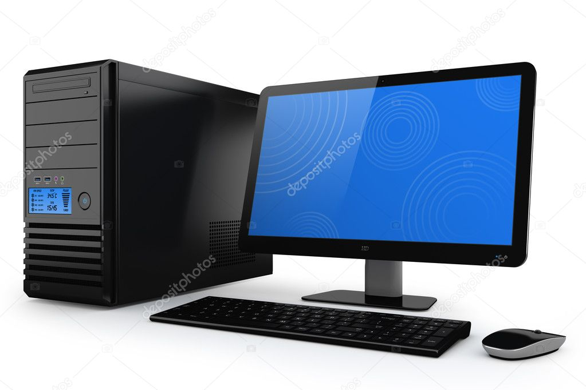
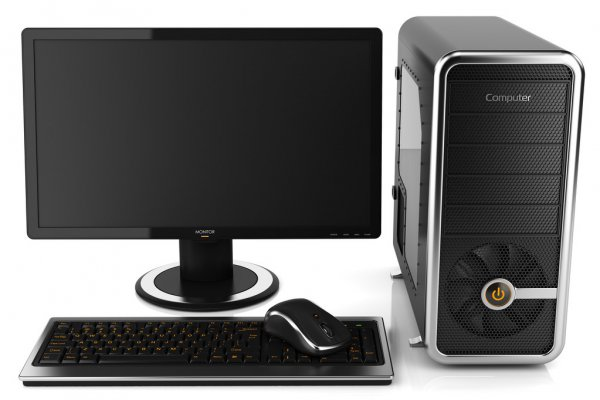
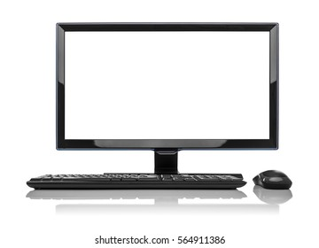

Au premier coup d’œil, on s’aperçoit que le HP EliteBook 745 G2 est un portable discret mais élégant. Avec seulement 1,78 KG et moins de 21mm d’épaisseur, ce Elitebook peut prétendre au titre tant convoité d’ultrabook, des portables fins, légers et beau misant sur la mobilité.
Point de vue construction, le portable est certifié par la norme militaire MIL-STD 810G qui se vérifie dans les faits par un châssis extrêmement solide malgré sa finesse. La base ne s’affaisse pas, peu importe la pression exercée, l’écran est bien maintenu par ses charnières, une construction à la qualité indéniable.
Les finitions sont elles aussi haut de gamme, l’ultrabook est en grande partie composé d’aluminium et de magnésium, plaisant à l’œil et résistant.


Configuration équilibrée & réactive sous AMD Le HP Elitebook 745 G2 n’est autre que l’équivalent sous plateforme AMD du 745 G2. Le processeur AMD A10 Pro 7350B dispose de 4 cœurs (3.3GHz en turbo) et d’un chipset Radeon R6 (Kaveri), il propose des performances similaires à ses concurrents de chez intel (i5 de 4é génération). Il est accompagné de 8 Go de RAM et d'un disque SSD 120Go. C’est une configuration bien équilibrée pour un Ultrabook qui bénéficie de la grande réactivité du SSD.
|  | La photo "PC de bureau moderne à domicile" peut être utilisée à des fins personnelles et commerciales selon les conditions de la licence libre de droits achetée. L'image est téléchargeable en qualité haute définition jusqu'à 6000x4000. |
|  | La photo "PC de bureau moderne à domicile" peut être utilisée à des fins personnelles et commerciales selon les conditions de la licence libre de droits achetée. L'image est téléchargeable en qualité haute définition jusqu'à 6000x4000. |
|  | Image vectorielle Redimensionnez à la taille que vous souhaitez sans perte de résolution. |